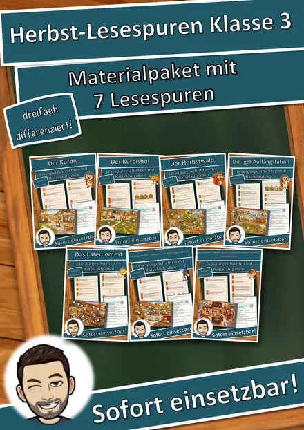

Musikinstrumente der Welt – eine Reise durchs Museum – Lesespurgeschichte mit Rätselaufgaben (Klasse 3)
Musikinstrumente der Welt – eine Reise durchs Museum – Lesespurgeschichte Musik (Klasse 3/4)Begib dich mit deiner Klasse auf eine spannende Lesespur einmal um die ganze Erde! Amira und Finn besuchen mit ihrer Klasse den Weltmusik-Saal im Völkerkundemuseum: Im Afrika-Saal trommeln sie auf der Djembe, im Didgeridoo-Raum brummt ein Holzrohr aus Australien, in der Asien-Halle klingt ein riesiger Gong lange nach. Im Sitar-Zimmer schwingen indische Saiten, in der Orient-Galerie entdecken sie die Oud, die Vorfahrin der Laute, im Anden-Raum singt die Panflöte, in der Europa-Ecke stehen Dudelsack und Akkordeon. Im Werkstattraum ordnen sie alle Instrumente nach schlagen, zupfen, streichen und blasen – und in der Konzertnische spielen alle zusammen ein Weltmusik-Konzert. Ihr Globus Globi ist immer dabei. Am Ende jedes Abschnitts verrät ein Hinweis den nächsten Ort auf dem Plan – nur wer genau liest, findet den Weg und sammelt alle geheimen Buchstaben zum Lösungswort.
Die perfekte Lesespur für den MUSIKUNTERRICHT der 3. und 4. Klasse – ideal zur Instrumentenkunde und zum interkulturellen Lernen: Sie verbindet sinnentnehmendes Lesen mit Instrumenten aus aller Welt, ihrer Herkunft und der Art der Tonerzeugung. Das Material ist SOFORT EINSETZBAR und in DREI DIFFERENZIERUNGSSTUFEN (leicht ★ / mittel ★★ / schwer ★★★) angelegt.WICHTIG: Das komplette Material ist sowohl in FARBE als auch in SCHWARZ-WEISS enthalten – ideal zum Sparen von Druckkosten.DAS IST ENTHALTEN
- Lesespurgeschichte in 3 Niveaus (leicht, mittel, schwer)
- farbiger Plan als Suchkarte
- Hörverstehen mit QR-Code zur MP3 (selbstständiges Hören mit Kopfhörern)
- vier Aufträge auf dem Weg: eine Zuordnung, ein Quiz, eine Rechenaufgabe und ein Steckbrief
- Rätselseite (Wörter-Suchsel + Fragen)
- Ausmalbild zum Thema (Kinder spielen Instrumente aus aller Welt)
- ausführliches Lösungsblatt für die Lehrkraft
- alles zusätzlich als komplette Schwarz-Weiß-VarianteSO GEHT DIE LESESPURDie Kinder lesen ab START, finden im Text den nächsten Ort, suchen ihn auf dem Plan und lesen bei dieser Station weiter. An jeder richtigen Station gibt es einen Buchstaben. Eingebaute Sackgassen (Garderobe, Museumscafé, Büro, Aufzug) sind keine Stationen und dienen der Selbstkontrolle. Am Ende werden die gesammelten Buchstaben umgestellt und ergeben ein geheimes Lösungswort. (Die Lösungen sind selbstverständlich nur im Lösungsblatt für die Lehrkraft enthalten.)INHALTLICHER SCHWERPUNKTDie Kinder lernen Instrumente aus Afrika, Australien, Asien, Arabien, Südamerika und Europa kennen, erfahren, aus welchen Materialien sie gebaut werden, und ordnen sie nach der Art der Tonerzeugung (schlagen, zupfen, streichen, blasen).ABGEDECKTER LEHRPLAN (Klasse 3/4, Musik)
- Musik (LehrplanPLUS Bayern) – Jahrgangsstufe 3/4 „Musik hören“ und „Musik – Mensch – Zeit“: Instrumente aus verschiedenen Ländern kennen, nach Art der Tonerzeugung ordnen, Material und Klang vergleichen und Musik anderer Kulturen wertschätzen.
- Deutsch – Lesen: Texten gezielt Informationen entnehmen; Zuhören: einem Sachhörtext folgen (Hörverstehen mit MP3).
- Mathematik – Addition, Multiplikation und Subtraktion.
- Fächerübergreifend / Kompetenzen: Heimat- und Sachunterricht (Länder und Kontinente, Materialien), interkulturelles Lernen, genaues Lesen und Prüfen, kreatives Gestalten (Ausmalbild).
Geeignet für Freiarbeit, Stationenlernen, Vertretungsstunden, Wochenplan, Projekttage und Distanzunterricht. Klassenstufe 3/4.
Ähnliche Materialien

Materialpaket Advent und Winter für die 6. Klasse: 7 Lesespurgeschichten mit Rätselaufgaben (Weihnachtsbasar, Saturnalien, Lichterfeste & mehr)

Materialpaket Herbst-Lesespuren für die 3. Klasse: 7 Lesespurgeschichten mit Rätselaufgaben (Kürbis, Igel, Laterne, Halloween & mehr)

Die Gleichnisse Jesu – verlorenes Schaf, barmherziger Samariter – Lesespurgeschichte mit Rätselaufgaben (Klasse 3)

Herbstgedichte – reimen, vortragen, selbst dichten – Lesespurgeschichte mit Rätselaufgaben (Klasse 3)

Lichterfeste in den Religionen – Diwali, Chanukka, Martinstag, Advent – Lesespurgeschichte mit Rätselaufgaben (Klasse 6)

Der Kanon – eine Melodie, viele Stimmen – Lesespurgeschichte mit Rätselaufgaben (Klasse 3)

Weihnachtslieder – Musik im Advent – Lesespurgeschichte mit Rätselaufgaben (Klasse 3)